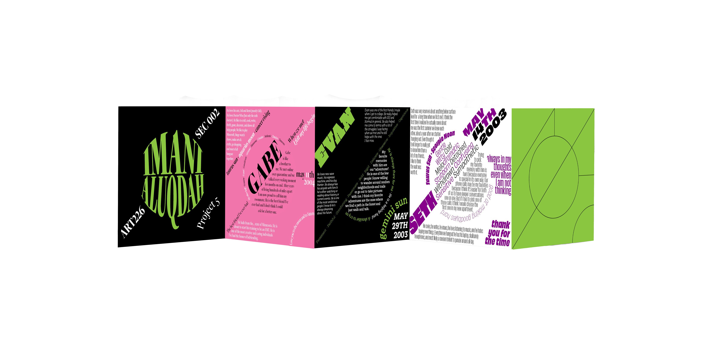
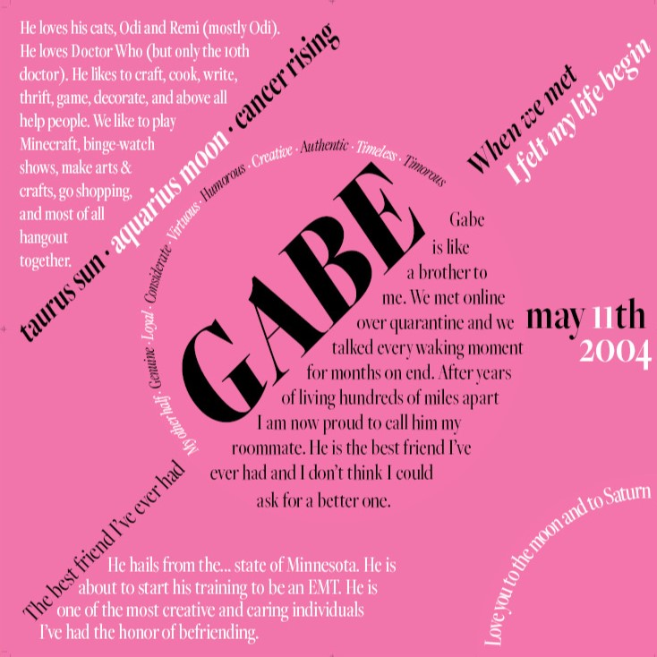
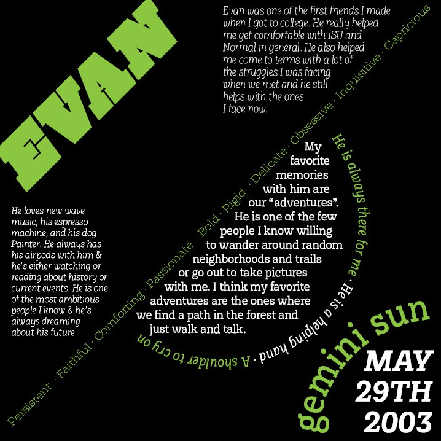
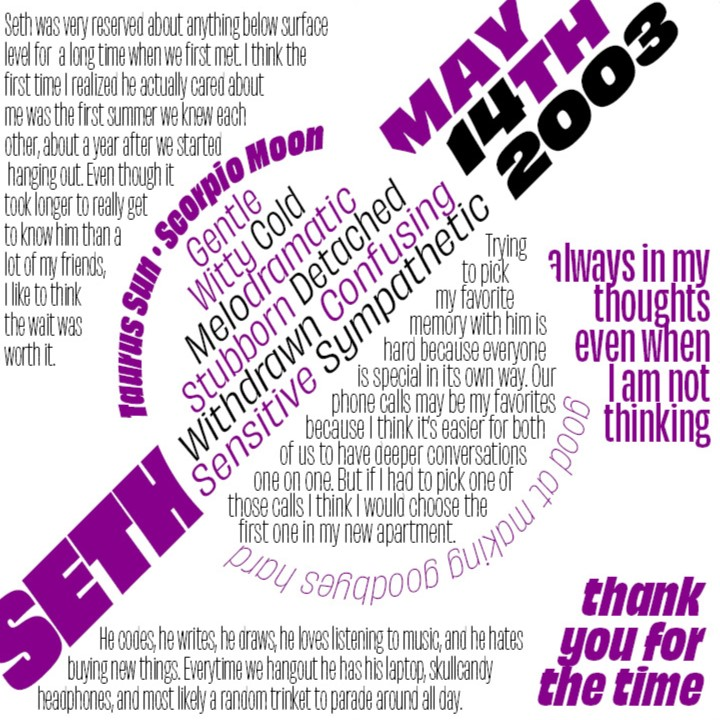
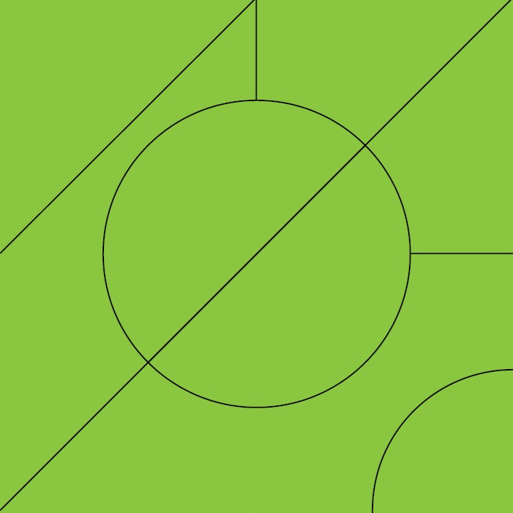

Grid Booklet
2024, Adobe Illustrator & InDesign, 50in x 10in
This project focused on designing an expressive typographic accordion book that conveys the stories of three of my close friends. A single grid system served as the foundation, guiding compositions that reflect each person’s individuality and the shared memories that connect us. Through thoughtful use of typography and structure, the book transforms personal narratives into a cohesive visual experience.






